阅读前说明
适用范围
本手册面向普通业务用户，说明如何查看事项、创建事项、办理审批、处理退回、申请调整或取消、提交完成材料、查看附件和审批记录。
本手册适用以下角色：
- 部门事项管理岗 / 系统办理人；
- 部门领导；
- 公司主管领导；
- 公司主要领导。
本手册不包含系统管理员、督办管理员、全局管理、全局统计、导入导出等管理类功能。
重要概念
| 概念 | 用户应如何理解 |
|---|---|
| 系统办理人 | 系统中负责继续办理进行中事项的用户，例如申请调整、申请取消、提交完成材料。 |
| 业务责任人 | 页面展示、责任留痕使用的责任人信息，不代表一定拥有系统办理权限。 |
| 待我审批 | 当前事项正等待本人审批。 |
| 待我办理 | 当前事项需要本人继续处理，但不处于本人审批节点。 |
| 可查看 | 可以打开和查看事项，不等于可以修改、办理或审批。 |
| 草稿 | 尚未提交审批的事项。 |
| 待分解 | 公司领导发起待办后，等待主责部门补充分解方案。 |
| 进行中 | 已完成立项或分解审批，正在实施的事项。 |
提示： 系统办理权限由系统中的用户关联决定；业务责任人主要用于页面展示和责任留痕。
第一版不包含的功能
- 系统管理；
- 督办管理；
- Excel 导入、导出和模板下载；
- 重点工作取消至公司主要领导最终审批的特殊流程。
1. 登录、修改密码与退出
1.1 登录系统
打开系统登录页面后，按以下步骤登录：
- 输入用户名。
- 输入密码。
- 点击“登录”。
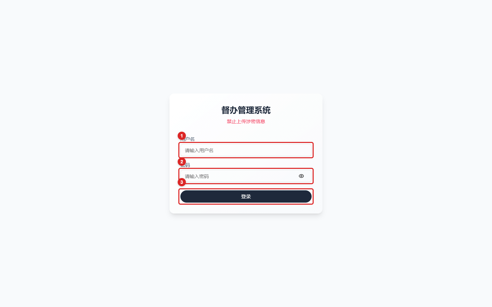
1.2 修改密码与退出
登录后，在页面右上角可以看到当前用户信息，并可以使用“修改密码”和“退出”入口。
- 点击“修改密码”，按页面提示修改本人密码。
- 点击“退出”，结束当前登录会话。
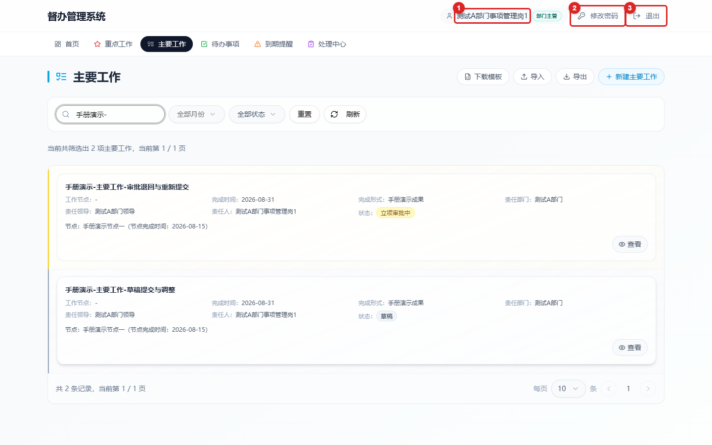
2. 首页概览与提醒
首页用于快速查看工作概况和待处理任务入口。首页不展开具体审批办理规则，审批和办理操作在后续章节说明。
首页通常包括：
- 事项统计卡片；
- 到期提醒；
- 待办理、待审批等处理入口；
- 进入重点工作、主要工作、待办事项列表的入口。
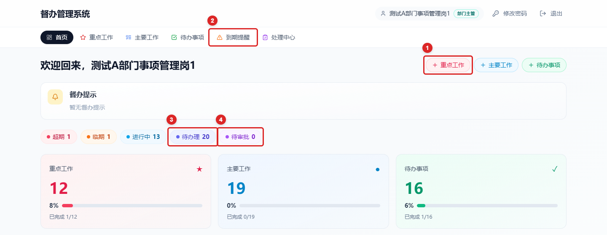
3. 查找和查看事项
3.1 按事项类型查看
系统将事项分为三类：
- 重点工作；
- 主要工作；
- 待办事项。
用户可以通过顶部导航进入对应列表，查看自己有权限查看的事项。
3.2 搜索和筛选事项
在事项列表中，可以通过关键词搜索事项，也可以按月份、状态等条件筛选。
常用操作包括：
- 在搜索框输入事项关键词。
- 选择月份条件。
- 选择状态条件。
- 点击“查看”进入事项详情页。
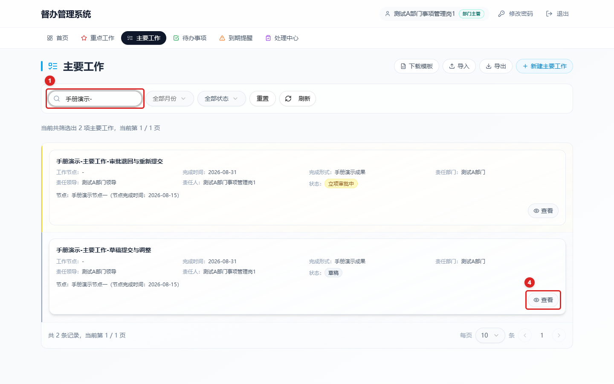
3.3 查看事项详情
进入事项详情页后，通常可以查看以下信息：
- 当前状态；
- 主责部门；
- 责任领导、责任人员等责任信息；
- 工作计划或任务节点；
- 普通附件；
- 完成材料；
- 审批记录。
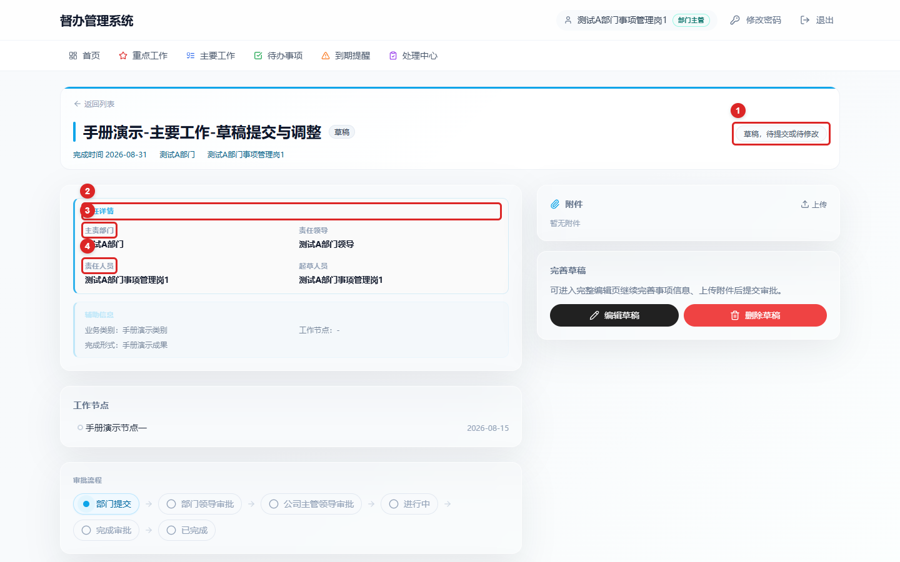
提示： 能查看事项，不代表一定可以修改、办理或审批。
4. 新建事项前：选择事项类型
新建事项前，应先根据业务场景选择事项类型。
| 事项类型 | 常见适用场景 | 谁可以创建 | 流程特点 |
|---|---|---|---|
| 重点工作 | 公司级重点督办事项 | 部门事项管理岗、部门领导 | 正常立项、调整、取消、完成流程。 |
| 主要工作 | 部门主要工作事项 | 部门事项管理岗、部门领导 | 正常立项、调整、取消、完成流程。 |
| 待办事项 | 领导交办或日常待办事项 | 部门角色、公司领导 | 公司领导发起后需由主责部门进行分解。 |
第一版手册只说明普通高频流程，不展开特殊取消流程。
5. 新建事项并保存草稿
5.1 新建重点工作或主要工作
部门事项管理岗或部门领导可以进入对应类型的新建页面，填写事项基础信息并保存草稿。
常用步骤：
- 进入重点工作或主要工作列表。
- 点击新建入口。
- 填写业务类别、工作事项、完成时间、完成形式等基础信息。
- 选择责任部门、责任领导、业务责任人和系统办理人。
- 根据需要填写工作节点。
- 点击“保存草稿”。
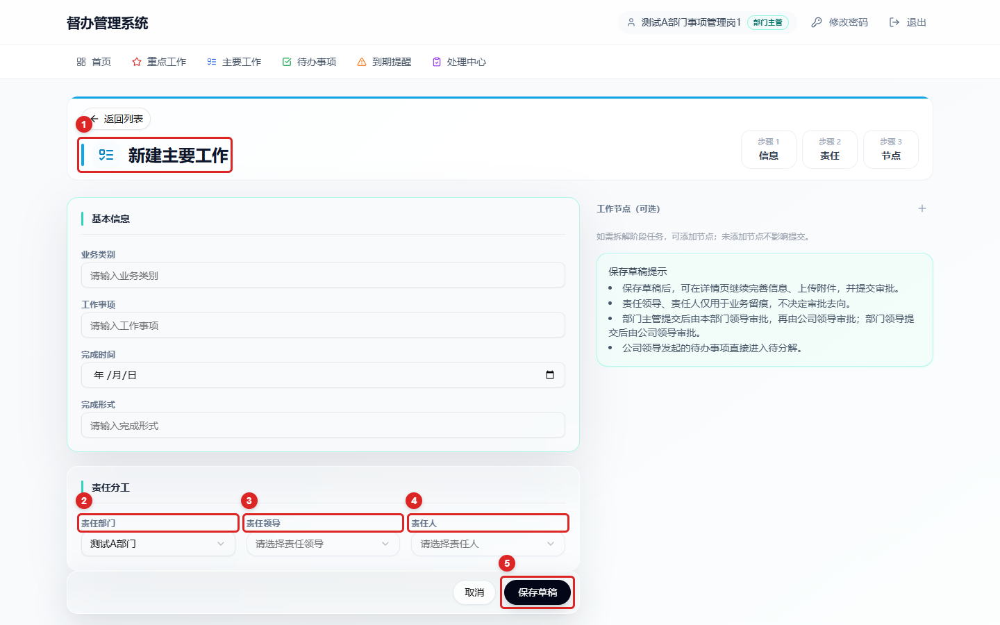
提示： 业务责任人用于展示和责任留痕；系统办理人负责后续系统办理动作。两者可以是同一人，也可能不同。
5.2 查看已保存的草稿
草稿保存后，可以在详情页继续查看和完善。草稿状态下，用户可以继续编辑、保存或提交审批。
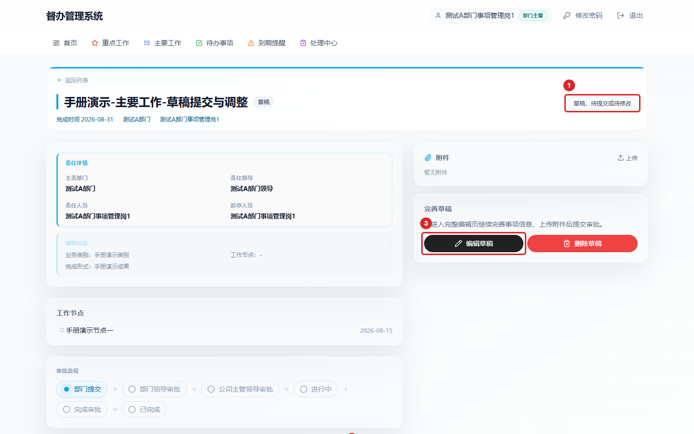
6. 编辑草稿并提交审批
6.1 编辑草稿
如果草稿内容需要补充或修改，可以进入编辑页面。
常用步骤：
- 打开草稿事项详情页。
- 点击编辑入口。
- 修改需要调整的内容。
- 点击保存按钮。
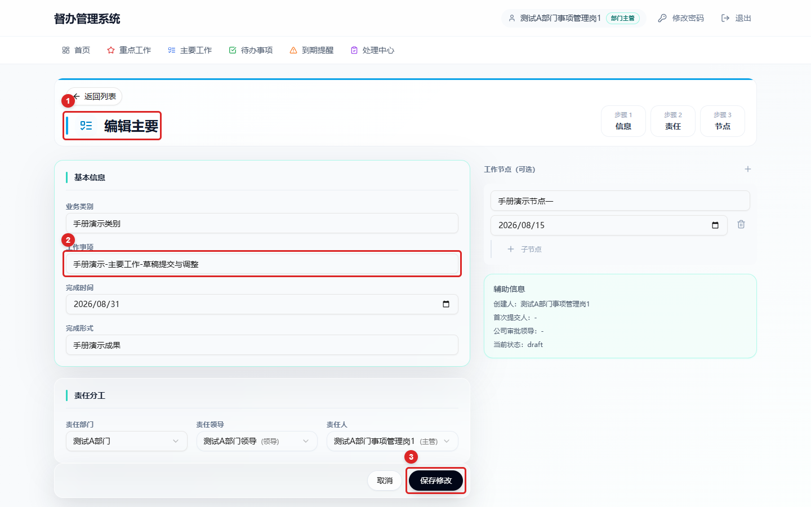
6.2 提交审批
草稿信息确认无误后，可以提交审批。
实际操作步骤：
- 在草稿详情页确认信息无误。
- 点击“提交审批”。
- 系统直接提交，并显示“已提交审批”提示。
- 事项进入审批流程。
提示： 提交审批时，系统不会显示额外的提交确认弹窗。请在点击“提交审批”前先确认信息完整、准确。
7. 公司领导发起待办与部门分解
7.1 公司领导发起待办
公司领导可以进入待办事项新建页面，填写待办事项内容。公司领导发起的待办事项提交后，会进入“待分解”，由主责部门补充分解方案。
常用填写内容包括：
- 事项提出领导；
- 事项提出场景；
- 工作计划；
- 进展情况；
- 待办事项；
- 完成时间；
- 主责部门和责任信息。
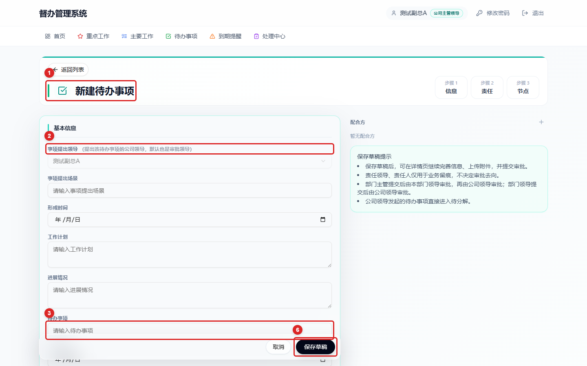
7.2 主责部门查看待分解事项
公司领导发起待办后，主责部门可以在事项详情中看到“待分解”状态和分解办理区域。
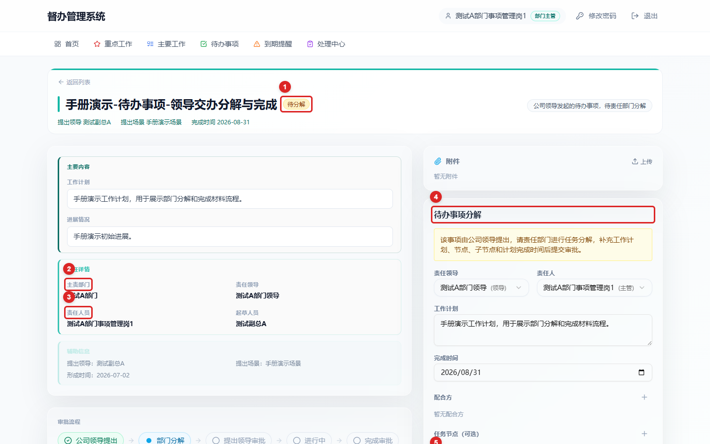
7.3 填写并提交分解方案
主责部门办理人需要补充分解方案后提交。
已验证的填写规则：
- 工作计划必填；
- 完成时间必填；
- 至少一个任务节点必填；
- 提交按钮为“提交分解结果”。
常用步骤：
- 确认责任领导和责任人。
- 填写工作计划。
- 填写完成时间。
- 添加至少一个任务节点。
- 点击“提交分解结果”。
- 系统将分解方案提交审批。
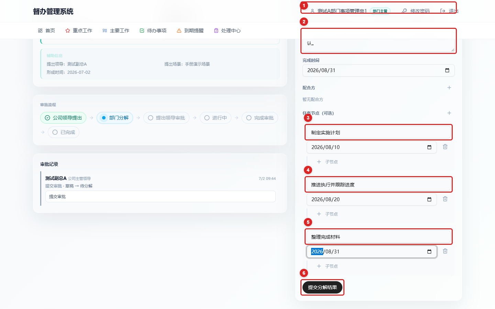
8. 处理中心：待我审批与待我办理
处理中心用于集中查看需要本人处理的事项。不同标签含义不同，不能混用。
| 标签 | 含义 |
|---|---|
| 待我审批 | 当前事项正等待本人审批。 |
| 待我办理 | 当前事项需要本人继续办理，例如草稿编辑、待办分解、退回后修改、进行中办理。 |
| 全部事项 | 用于集中查看处理中心中的相关事项，不等于所有用户都能办理所有事项。 |
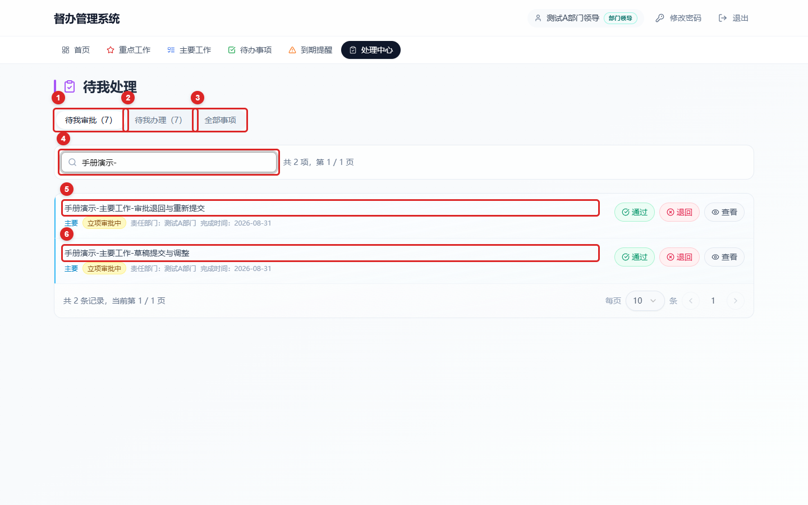
提示： 部门领导可以查看本部门相关事项，但只有事项进入本人审批节点时，才可以审批。
9. 审批通过与审批退回
9.1 审批通过
当事项进入本人审批节点时，详情页会显示审批操作区。审批通过时，可以填写审批意见。
常用步骤：
- 打开待审批事项。
- 查看事项内容和审批流程。
- 点击“审批通过”。
- 填写审批意见。
- 点击“确认通过”。
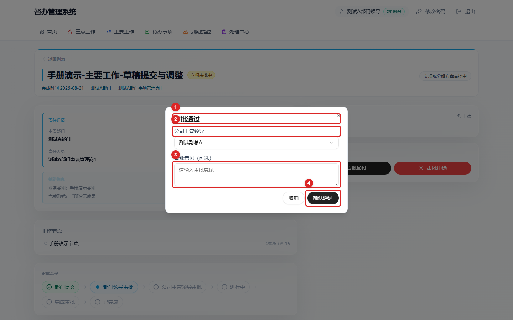
9.2 审批退回
如果事项内容需要修改，审批人可以退回事项。
常用步骤：
- 打开待审批事项。
- 点击“审批拒绝”。
- 按页面提示填写退回原因。
- 提交后，事项回到可修改状态。
- 退回原因会显示在事项详情中。
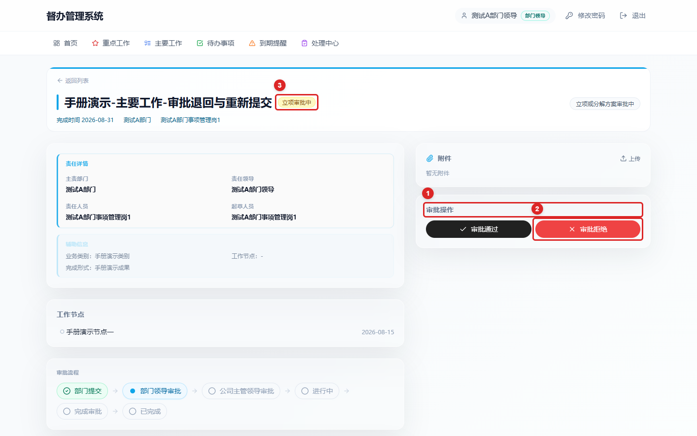
10. 退回后修改并重新提交
事项被退回后，系统指定的办理人可以查看退回原因，修改后重新提交。
操作步骤：
- 打开被退回事项。
- 查看退回原因。
- 进入修改页面，调整事项内容。
- 填写修改说明。
- 点击“保存修改并重新提交”。
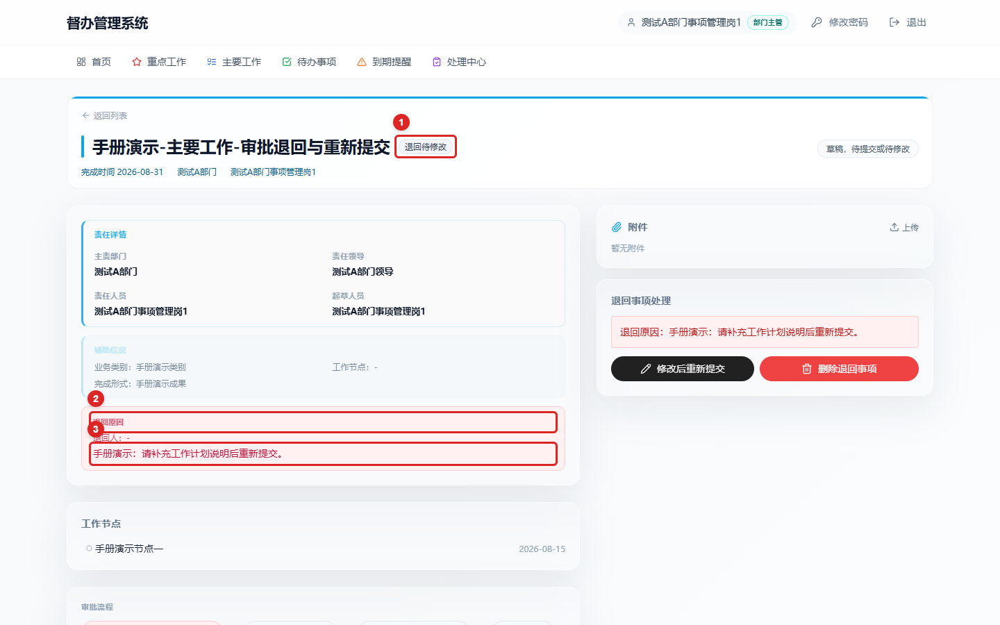
提示： 退回后由系统指定的办理人继续处理。同部门其他用户即使可以查看，也不一定有重新提交权限。
11. 进行中事项办理
11.1 可办理操作
事项进入“进行中”后，系统办理人可以根据页面入口继续办理。
常见办理操作包括：
- 申请调整；
- 申请取消；
- 提交完成材料。
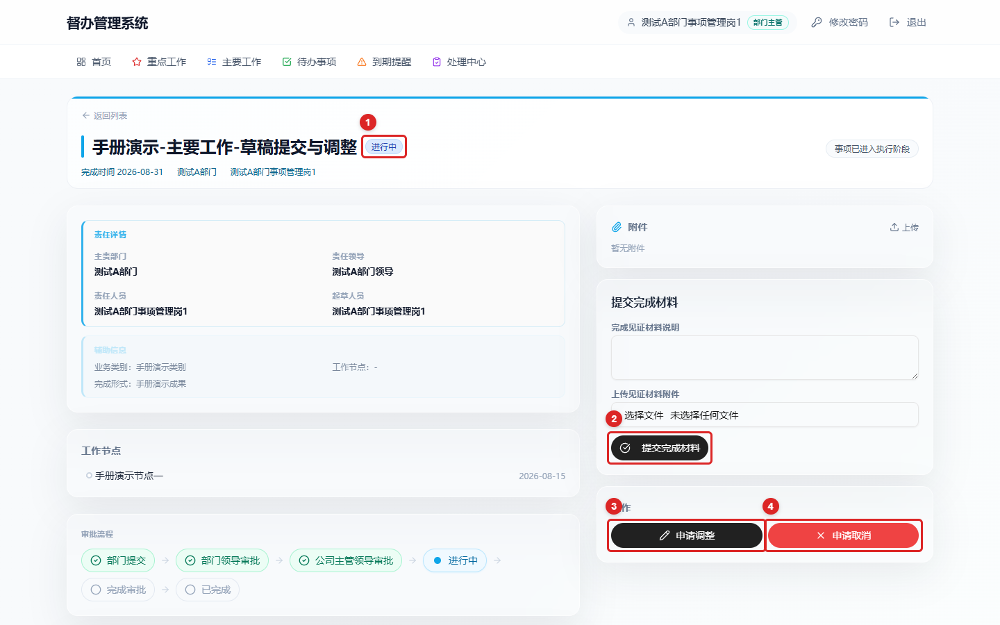
11.2 申请调整
当事项内容需要变更时，系统办理人可以申请调整。
操作步骤：
- 打开进行中事项。
- 点击“申请调整”。
- 填写调整原因。
- 修改允许调整的事项内容。
- 点击“提交调整申请”。
- 调整申请进入审批流程。
- 审批通过后，事项回到进行中。
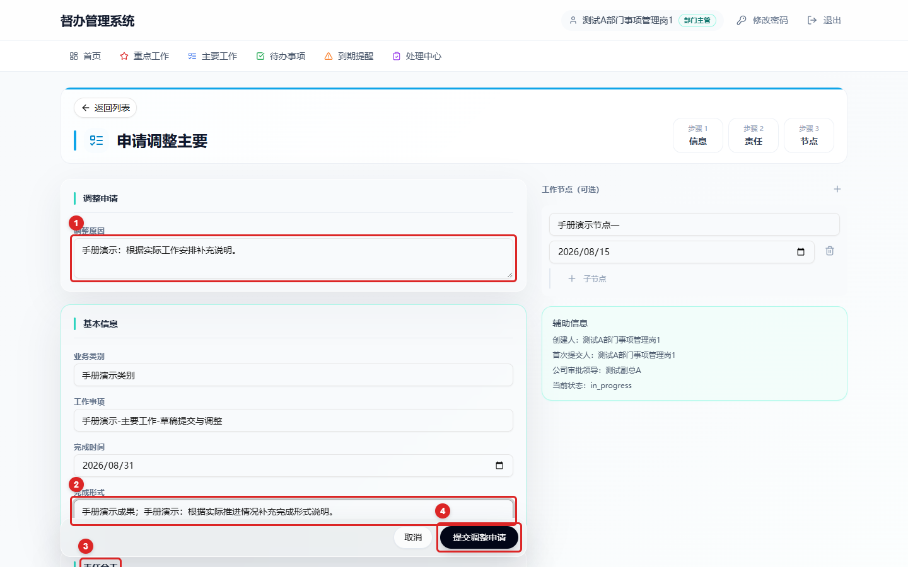
11.3 申请取消
当事项不再需要继续实施时，系统办理人可以申请取消。
操作步骤：
- 打开进行中事项。
- 点击“申请取消”。
- 查看公司审批领导。
- 填写取消原因。
- 点击“提交取消申请”。
- 取消申请进入审批流程。
- 审批通过后，事项进入“已取消”。
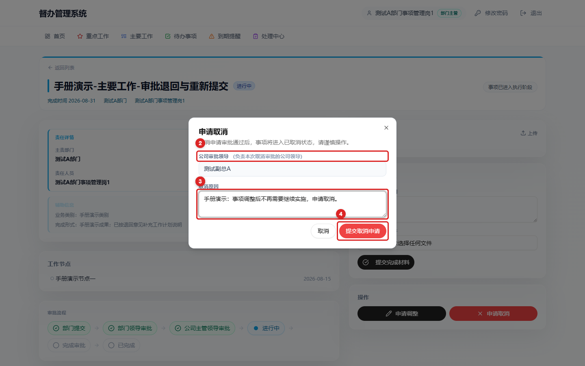
12. 提交完成材料与完成后查看
12.1 提交完成材料
事项处于“进行中”且实际工作已完成后，系统办理人可以提交完成材料，进入完成审批流程。
操作步骤：
- 打开进行中事项。
- 在“完成见证材料说明”中填写完成说明。
- 上传见证材料附件。
- 点击“提交完成材料”。
- 事项进入完成审批流程。
- 审批通过后，事项进入已完成。
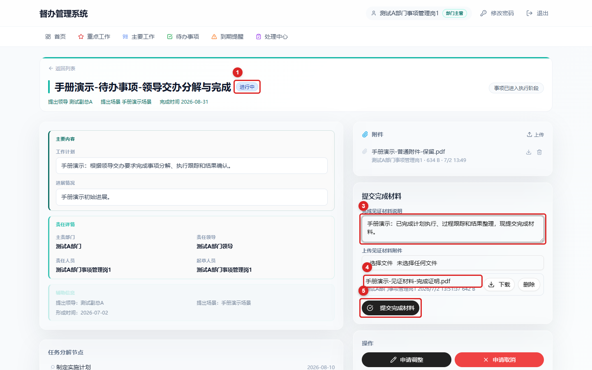
12.2 查看完成结果和见证材料
事项完成后，详情页会显示已完成状态，并保留完成材料和见证材料附件。
用户可以查看：
- 已完成状态；
- 完成材料说明；
- 见证材料附件；
- 下载入口。
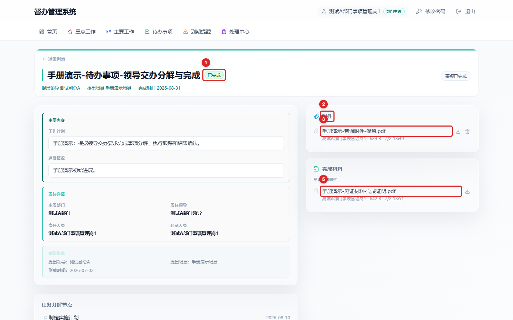
13. 普通附件与审批记录
13.1 管理普通附件
普通附件用于补充事项过程中的相关材料，不等同于完成材料。
常用操作包括：
- 点击普通附件区域的“上传”。
- 选择文件并上传。
- 在附件列表中点击下载入口查看附件。
- 对本人上传的附件，可以使用删除入口删除。
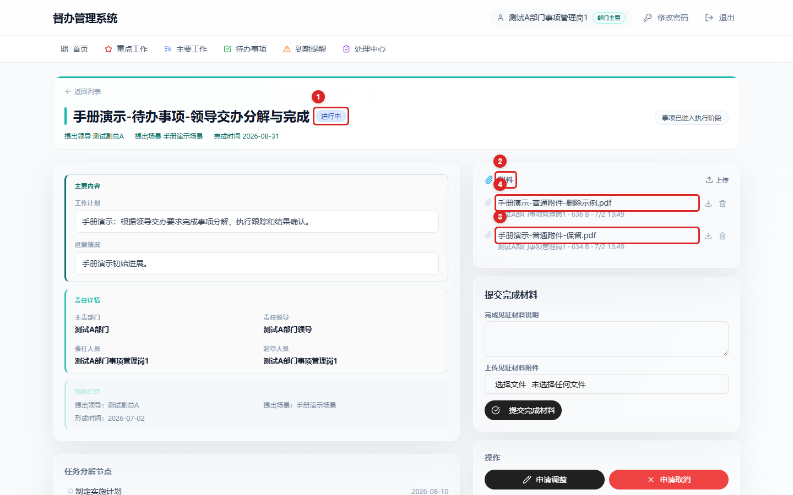
提示： 已完成或已取消事项不能继续上传普通附件。
13.2 查看审批记录
审批记录用于查看事项流转过程，帮助用户了解事项经过了哪些环节。
审批记录通常可以帮助用户查看：
- 何时提交；
- 谁进行了审批；
- 审批意见；
- 状态如何流转；
- 是否提交过完成材料。
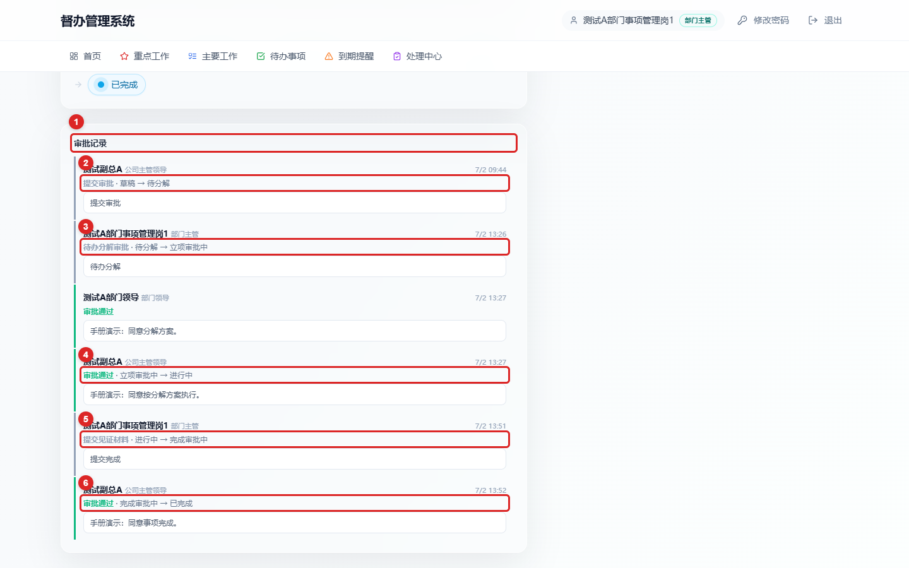
14. 常见问题
14.1 为什么我能看到事项，却没有编辑或办理按钮？
能查看事项，只代表你有查看权限。编辑、办理、提交、调整、取消、完成等操作需要系统判断你是否是当前应办理的用户，以及事项是否处于允许办理的状态。
14.2 为什么我看得到本部门事项，却不能审批？
部门领导可以查看本部门相关事项，但只有事项进入本人审批节点时，页面才会显示审批操作。能查看不等于能审批。
14.3 业务责任人和系统办理人有什么区别？
业务责任人用于页面展示和责任留痕。系统办理人负责进行中事项的调整、取消和完成材料提交等操作。草稿编辑、退回后修改和重新提交，由页面显示可办理入口的用户继续处理。两者可以相同，也可以不同。
14.4 提交审批后为什么没有确认弹窗？
系统实际行为是：点击“提交审批”后直接提交，并显示“已提交审批”提示。因此提交前应先检查事项内容是否完整、准确。
14.5 待我审批和待我办理有什么区别？
待我审批表示事项正在等待本人审批。待我办理表示事项需要本人继续处理，但不一定是审批，例如草稿编辑、待办分解、退回后修改、进行中办理等。
14.6 公司领导发起的待办为什么不能直接进入进行中？
公司领导发起待办后，主责部门还需要补充分解方案，包括工作计划、完成时间和任务节点。分解方案提交并审批通过后，事项才会进入进行中。
14.7 退回后由谁修改和重新提交？
退回后，由系统指定的办理人查看退回原因、修改事项并重新提交。同部门其他用户即使可以查看，也不一定有重新提交权限。
14.8 为什么完成后不能继续上传普通附件？
事项完成后，流程已经结束，页面不再提供继续上传普通附件的入口。完成后的材料主要用于查看和留痕。
14.9 为什么我不能删除其他人上传的附件？
普通用户只能删除本人上传且页面允许删除的附件。其他人上传的附件通常只能查看或下载，不能删除。
14.10 如何查看事项已经经过哪些审批环节？
打开事项详情页，查看“审批记录”区域。审批记录会显示提交、审批、退回、分解、提交完成材料等关键操作，以及对应的操作人、时间、意见和状态变化。